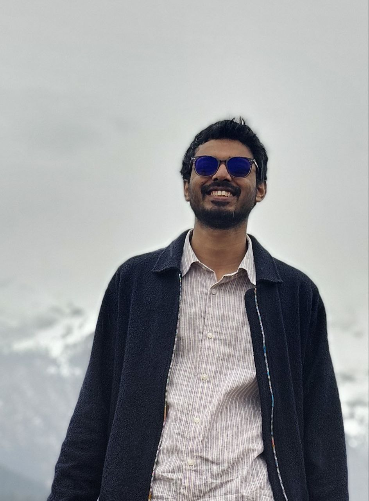
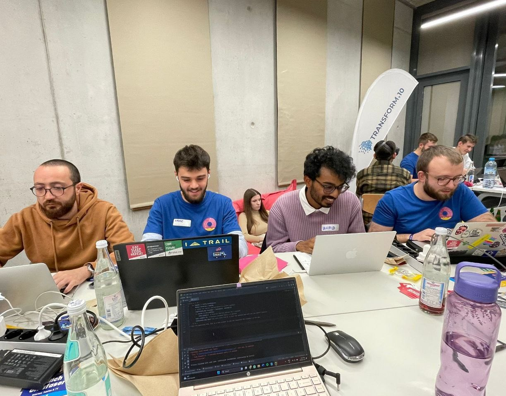
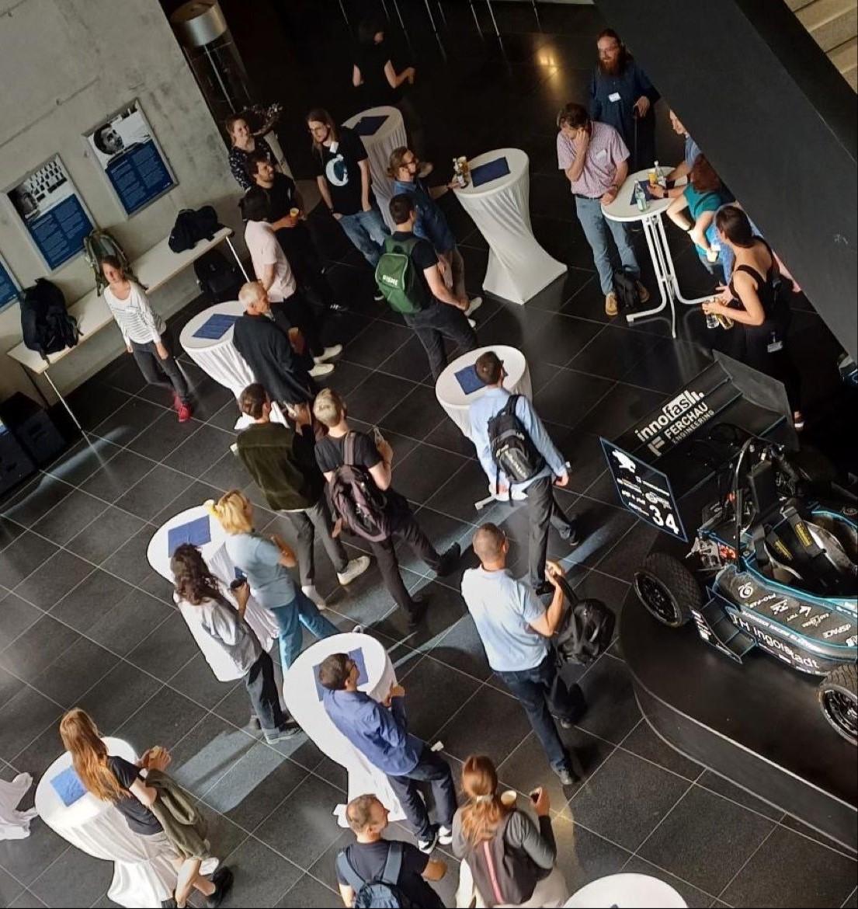
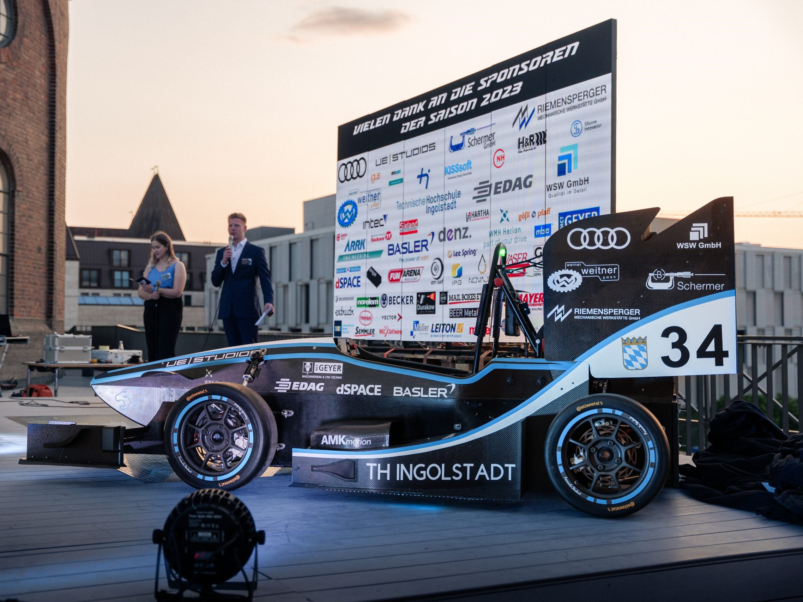

I'll try to summarize my academic background,
knowledge and projects here for your better understanding.
I am currently enrolled in the Fourth semester,
Computer Science and Artificial Intelligence at Technische Hochschule Ingolstadt. During my academic
career, I have overseen a demanding course load, taken part in several events, organized AI workshops,
participated in hackathons, was part of real-world projects and seminars, followed online courses, and
besides worked a part-time job at KFC to support my living expenses. My abilities that are pertinent to
the position being considered have improved tremendously because of this wide range of experiences.
However, I want to gain more experience and can be a part of any development team.
Computer Science and Artificial Intelligence
Technische Hochschule Ingolstadt
Oct 2022 - Present
Throughout my academic journey, I've delved into a comprehensive array of subjects spanning computer science and mathematics. In the initial phases of my education, I acquired a foundational understanding of computer hardware, software, system architecture, and various operating systems including Linux. Moreover, I honed my programming skills in Python and Java, pivotal languages in the realm of software development.
Expanding upon this groundwork, I delved into advanced topics such as machine learning, deep learning, and artificial intelligence, where I gained insights into essential algorithms and methodologies. This practical knowledge was further reinforced through hands-on experience, including the development and training of models from scratch.
In parallel, I enriched my mathematical proficiency with courses in Advanced Calculus and Linear Algebra, providing a solid mathematical framework for tackling complex problems in computer science.
Subsequently, I broadened my expertise by exploring optimization algorithms and delving into the intricacies of web development. Through coursework in Web Technology, I acquired skills in both front-end and back-end development utilizing languages such as HTML, CSS, JavaScript, and frameworks like Django and React.
A significant portion of my studies was dedicated to Software Engineering, wherein I gained a holistic understanding of software design principles, requirement engineering, and rigorous software testing methodologies encompassing both white-box and black-box techniques. Additionally, I cultivated proficiency in project management, from conception to execution.
In tandem with these core subjects, I delved into data visualization and analysis, leveraging tools such as Docker, MongoDB, and web scraping techniques to manipulate and interpret large datasets effectively.
Currently, my academic pursuits are focused on advanced topics including spoken and natural language understanding, computer vision, and symbolic artificial intelligence. Engaging in hands-on projects and attending lectures facilitated by esteemed professors, I am continuously expanding my knowledge and practical skills in these cutting-edge domains.

International Business and Management
Hochschule Fulda
Feb 2021 - Sep 2022
During the challenging circumstances of the Covid era, I engaged in a degree program at Fulda University, enhancing my understanding of Business and Management. Seeking to utilize my downtime productively, I endeavored to contribute positively. Throughout the program, I developed a solid grasp of Business principles, Financial and Cost Accounting, alongside introductory exposure to Economics and Research methodologies. Furthermore, I honed my proficiency in German for business purposes and gained valuable insights into project management practices.
Statistics
Shahjalal University of Science and Technology
Jan 2019 - Feb 2021
I have successfully completed two years of a bachelor's degree program at a prestigious university in Bangladesh, which fulfills the academic requirements for enrollment in a university in Germany.
During my studies, I have cultivated a robust foundation in mathematics, encompassing Real Analysis, Statistical Theory, Probability, Linear and Higher Algebra, Regression Analysis, Sampling Techniques, and Numerical Methods. Additionally, I have engaged in coursework covering Microeconomics and Macroeconomics. I have gained practical experience in utilizing R programming.

Certifications
I have acquired proficiency in image processing through a comprehensive online course led by Andrew Ng on Coursera. Additionally, I completed a technical support fundamentals program, enhancing my skills in diagnosing hardware and software issues and navigating various Linux distributions. Presently, I am actively engaged in an online course focusing on web development.
Events and Programs
I have participated in an AI Hackathon 2023, where we developed an automated chatbot and a transportation software with speech recognition capabilities specifically designed for individuals with disabilities.
In addition, I dedicated five years to an youth team from Bangladesh, "Team Atlas," engaging in numerous national and international competitions. Notably, I proudly represented our team at SAUVC in Singapore in 2019, as well as IRC and IRDC in India.

Volunteer
I have served as a moderator at Open Research Space, Technische Hochschule Ingolstadt for six months. During this time, I've led workshops focused on Artificial Intelligence and have been responsible for website updates and event coordination. Additionally, I volunteered at KONVENS 2023, an esteemed International Conference dating back to 1992, where Bachelor's, Master's, and PhD researchers present their papers on Natural Language Processing. Collaborating closely with renowned researchers and professors, I gained valuable insights into the industry's cutting-edge developments.

Work Experience
In addition to my academic pursuits and role as a Software Developer at Schnazer Racing, I remain committed to my studies, maintaining focus and motivation alongside engaging in extracurricular projects and volunteer commitments. My experience at Schnazer Racing has helped to enhance my proficiency in German within a professional setting, adeptly navigate challenging situations, and thrive under pressure. Despite balancing various responsibilities, I continue to excel in my academic and professional endeavors, demonstrating strong time management and dedication.
Phone
(49) 1575 3255 867Address
Mercy Str85051 Ingolstadt
Germany